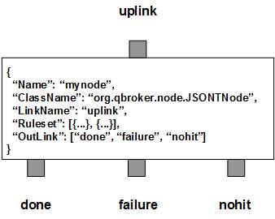

JSONTNode formats JSON payload and properties of JMS messages based on either a simple JSON template filr or a set of JSON formatters. There are three outlinks, done for the formatted messages, failure for those messages failed in the format process and nohit for those messages not belonging to any predefined rulesets.
JSONTNode contains a number of predefined rulesets. These rulesets categorize messages into non-overlapping groups. Therefore, each rule defines a unique message group. The ruleset also defines a formatter and its formatting parameters. Different groups may have different formatters or different format parameters. Due to JMS specifications, you have to clear user properties before resetting them on a readonly message. You can specify ResetOption in a ruleset so that the message properties will be reset for modifications. Its value is 0 for no reset, 1 for optional reset and 2 for guaranteed reset.
Each ruleset may has a list of FormatterArgument for generic format. If it is defined in a rule, it will be invoked before JSON formatters. By default, a rule has JSONFormatter defined to format JSON payload. A JSONFormatter has a list of format opertions with each containing JSONPath for specifying what to be formatted in the JSON payload, Operation, DataType, Template, Substitution and Selector. JSONTNode supports various opertions, such as get, set, parse, merge, union, first, last, min, max, sort and uniq, etc.
JSONTNode also supports a simple JSON template applied on the JSON payload. The path to the template file is generated by URITemplate. Therefore, it URITemplate is deinded in a ruleset, JSONTNode will invoke the template on the incoming message for the path. Then it will load the template file and caches the compiled template dynamically. You can set the TTL for each rule so that its JSON templets will be removed automatically after the expirations. For parameters, JSONTNode supports dynamic setting of parameters. It means you can reference properties of the message in your parameters. JSONTNode will retrieve the data from incoming message and set the parameters before the format process.
JSONTNode also supports customized formatters via plugins. In this case, the full ClassName of the plugin and its argument for constructor must be defined in the ruleset. The contructor argument is defined in a Map of JSONFormatter. JSONNode will pass the data to the plugin's constructor as an opaque object during the instantiation of the plugin. The developers of the plugin formatter are supposed to document the details of JSONFormatter. JSONTNode will load the plugin and invokes the method to format the messages of the ruleset.
JSONTNode always adds an extra ruleset for the nohit messages. This nohit ruleset is always the first ruleset with the id of 0. On the node level, DisplayMask and StringProperty control the display result of outgoing messages.
You are free to choose any names for the three fixed outlinks. But JSONTNode always assumes the first outlink for done, the second for failure and the last for nohit.
Apart from the common properties, there are three implementation specific properties for JSONTNode.
| Property Name | Data Type | Requirement | Description | Examples |
|---|---|---|---|---|
| SessionTimeout | integer | optional | timeout in sec for a session | 3600 (default: 0) |
The format process is invoked via the pre-defined rulesets. Therefore, the configuration of the rulesets is critical to the operations of JSONTNode. Here are complete properties of rulesets for JSONTNode.
| Property Name | Data Type | Requirement | Description | Examples |
|---|---|---|---|---|
| Name | alphanumeric with no spaces | mandatory | name of the ruleset | event |
| ResetOption | integer | optional | option to reset properties | 2 (default: 0) |
| URITemplate | string | optional | template for the full path of the template file | /opt/qbroker/templates/##TempName##.jtmp |
| URISubstitution | string | optional | text substitution for the full path of the template file | s/\.json$/\.jtmp/ |
| TimeToLive | integer | optional | seconds to cache the json templates | |
| Parameter | map | optional | for setting json parameters from the messages | see example |
| JSONFormatter | list | optional | list of json format operations | see example |
| ClassName | alphanumeric with no spaces | optional | full classname of the plugin formatter | |
| PreferredOutLink | alphanumeric with no spaces | mandatory for bypass only | name of the preferred outlink | bypass |
| FormatterArgument | list | optional | list of post format operations | see example |
| JMSPropertyGroup | list | optional | list of pattern groups on properties to select messages | see example |
| XJMSPropertyGroup | list | optional | list of pattern groups on properties to exclude messages | see example |
| PatternGroup | list | optional | list of pattern groups on body to select messages | see example |
| XPatternGroup | list | optional | list of pattern groups on body to exclude messages | see example |
| StringProperty | map | optional | for setting the user properties on the messages | see example |
{
...
"Ruleset": [{
"Name": "bypass",
"PreferredOutLink": "NOHIT",
"JMSPropertyGroup": [{
"JMSType": "^score$"
}]
}],
...
}
where it routes the messages to the outlink of NOHIT.
Here is an example of the format ruleset.
{
...
"Ruleset": [{
"Name": "tm",
"JMSPropertyGroup": [{
"JMSType": "."
}],
"URITemplate": "/opt/qbroker/templates/##JMSType##.jtmp",
"TimeToLive": "7200",
"Parameter": {
"tc": "##RTC##",
"tm": "##Millis##"
}]
}],
...
}
where it expects that the message has defined the template name of the JSON
template file in its JMSType property. The node will extract the data for
the two parameters and set them before the format. Upon success, the message
body will contain the new content formatted from the JSON template.
Here is an example of JSONFormatter:
{
...
"Ruleset": [{
"Name": "rb",
"JMSPropertyGroup": [{
"FileName": "\\.rb$"
}],
"ResetOption": "1",
"JSONFormatter": [{
"JSONPath": ".",
"Operation": "remove",
"DataType": "map",
"Selector": "^_"
}]
}],
...
}
where it removes all keys starting with "_" in the current json map and
creates the message properies on those removed data.
Here is an example of JSONTNode:
{
"Name": "node_jsont",
"ClassName": "org.qbroker.node.JSONTNode",
"Description": "format messages",
"Operation": "format",
"LinkName": "root",
"Capacity": "6",
"WaitTime": "50",
"DisplayMask": "0",
"Debug": "1",
"SessioTimeout": "600",
"Ruleset": [{
"Name": "html",
"JMSPropertyGroup": [{
"JMSType": "."
}],
"URITemplate": "/opt/qbroker/templates/##JMSType##.jtmp",
"TimeToLive": "3600"
}],
"OutLink": ["done", "failure", "nohit"]
}